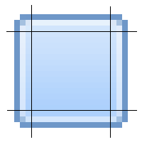
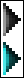

|
|
IntroductionClassic Shell™ supports skin files for the start menu. The skin can change things like:
- The background image or color of the menu
- The font and text color for various elements
- Arrows and other icons
- Sizes, padding and alignment
- The image to use for the menu separators
All information about a skin is stored in a .skin or a .skin7 file (the .skin7 files are for use by the Windows 7 style). The skin files must be
installed in the Skins
directory of Classic Shell (for example C:\Program Files\Classic Shell\Skins).
Tutorial Contents:
Anatomy of a skin file
The skin file is a DLL that contains specific resources like bitmaps,
icons, etc. The only mandatory resource is a text resource with ID=1
and type="SKIN". It is the text that describes the skin. The
description can refer to other resources like bitmaps and icons.
The easiest way to create a new skin is to start from an existing .skin
file. Make a copy of one of the default skins and save it under a new
name. Then open it in Visual Studio's resource editor, or another
resource editor like Resource
Hacker:

A great feature of Resource Hacker is that it lets you edit the text
directly inside. When you are done, press the "Compile Script" button,
then save the file.
Note: Keep in mind that often the Skins
folder is protected by the OS. If you want to use a tool to edit a file
directly in that folder, the tool must be started as Administrator.
To replace a bitmap resource, select Action
-> Replace Bitmap. Then pick your new bitmap file, pick the
ID of the bitmap resource you want to replace, click Replace and save. You can replace an
icon resource in a similar way.
To add a new bitmap, select Action
-> Add a new Resource. Pick the new bitmap file, enter a new
name (must be a number), and you can leave the language blank. Finally
click Add Resource and save.
Bitmaps
The start menu uses various bitmap resources for its graphical
elements. Every bitmap in the menu has a name for its setting (for
example "Main_pager_arrows" or "Search_bitmap"). You specify the bitmap
resource with the setting <name>=<resource index>. For example:
Main_bitmap=1 -
You can use BMP, PNG and JPG
images as resources. Put BMP files into the BITMAP resource section.
Put PNG and JPG files into the IMAGE resource section. The menu will
first search the BITMAP section for the given resource index, and then
the IMAGE section.
BMP and PNG images can have alpha channels to support transparency. JPG
images are always opaque, and of course, of lower quality.
A bitmap can optionally have a color mask. The mask determines how the
bitmap is mixed with up to 3 additional colors, called "tint colors".
The Red channel of the mask controls how much of the first tint
color to mix in, the Green channel controls the second tint color and
the Blue channel controls the third tint color. By default the first
tint color is the system window (Glass) color, and the second tint
color is the menu background color.
The mask only applies to the RGB portion of the bitmap.
The Alpha channel remains unchanged:

In this example the first image is the background, the second is the
mask and the third is the end result. The red portions of the mask
blend the glass color (purple) with the background. The green portions
blend the menu color (gray) with the background. By varying the
intensity of red and green in the mask image we control how much the
colors are blended.
The mask can be specified in one of two ways - either <bitmap>_mask=<resource index> or <bitmap>_mask=#RRGGBB (a color in hexadecimal format). If the mask is a bitmap it must have the same dimensions as the main bitmap. Some examples:
Main_bitmap_mask=2 - use a bitmap resource with index 2
Main_bitmap_mask=#FF0000 - use a fixed color with Red=255, Green=0, Blue=0
To change the tint color:
Main_bitmap_tint1=#000000 - The first tint color is black
Main_bitmap_tint2=#808080 - The second tint color is gray
The main bitmap can also be a solid color. If both the bitmap and the
mask are solid colors, the end result is a solid-color bitmap that is
the result of the bitmap color and the tint colors all mixed together
according to the mask.
If the main bitmap is a solid color and the mask is a bitmap, then the
dimensions of the mask bitmap determine the dimensions of the final
bitmap. In this case the alpha channel of the mask is used as alpha
channel of the result.
The masks and tint colors are a powerful system that allows you to
achieve a large variation of possibilities without the need for a large
number of bitmap resources. For good examples how to use the color tints, look at the Metro skin.
See the reference section at the end for the supported bitmaps.
Named colorsEverywhere
a solid color is accepted, you can use one of the predefined named
colors. The actual color at any given moment will depend on the current
Windows settings. Using named colors allows you to create skins that
follow the current Windows color scheme.
A small number of colors are system colors for classic window elements
- like button color, text highlight color, and so on. For example:
Main_bitmap=$SystemActiveBorder - use the system active border color
You can see a full list of those system colors in the reference section.
The rest of the named colors are only available on Windows 8 and up. They come from the
Metro palette, which is a complete set of hundreds of named colors,
designed to look good together.
Main_bitmap_jump=$StartHighlight - use the start screen highlight color
Not all colors are available on all
versions of Windows. Windows 8.1 adds new ones that don't exist in
Windows 8, and Windows 10 adds even more colors. To make skins that look good on all versions of Windows, you may use a
list of colors in order of preference. If the first one is not
available, the menu will use the next one in the list.
Main_selection=$SystemAccentDark2|$StartSelectionBackground
- use the system accent dark 2 color, or if it is not available, use
the start selection backgorund color
You can get a full list of the Metro colors using the Classic Shell Utility. You can find it on the main Downloads page.
For
an example how to use the Metro colors, look at the Metro skin. It
makes a heavy use of the named colors to achieve look that matches the
current color scheme of the start screen.
Bitmap slicesSince many of
the start menu elements are not fixed size (they is resized depending on the number
of menu items, the font size, etc) and bitmaps are fixed size, we need
a way to resize the bitmap to fill a given area. Simply stretching the
whole bitmap will not work because fine details around the border will get blurred.
That's where the "slicing" system comes in. Each bitmap is split into
slices horizontally and vertically:

The 4 corners are never stretched. The left and right slices are
stretched only vertically. The top and bottom slices are stretched only
horizontally. And the middle portion can be stretched in any direction.
This lets us get any size background without sacrificing the sharp
edges or the smooth gradient in the middle:

Some images can have more than 3 slices. The main menu background has 6
slices - 3 for the caption area and 3 for the menu area.
Some images don't need both vertical and horizontal slices. The menu
separator image is only split horizontally because all separators have
the same height.
Backgrounds
A background is a combination of a bitmap and its slices. It consists of the following settings: <name>, <name>_mask, <name>_slices_X, <name>_slices_Y. For example if the name is "Main_bitmap":
Main_bitmap=1 -
Main_bitmap_mask=2 - use a bitmap resource with index 2
Main_bitmap_slices_X=6,1,1,6,1,13
Main_bitmap_slices_Y=60,317,8
See the reference section at the end for the supported backgrounds.
Skin items
A skin item is a combination of settings that control a particular
element of the menu, for example the selected element. The following
settings are supported:
<name>_font - the font used for the text
<name>_glow_size - the glow size for the text (only works in Windows 7)
<name>_text_color - the color for the text (4 colors for normal, selected, disabled, disabled+selected)
<name>_text_padding - the padding on all sides of the text (left, top, right, bottom)
<name>_icon_padding - the padding on all sides of the icon
<name>_selection
- the background of the item, usually when it is selected (this setting
has the _mask, _slices_X and _slices_Y sub-settings, it can also be a
solid color in #RRGGBB format)
<name>_arrow_color - the color of the sub-menu arrow triangle if the arrow is solid color (2 colors for normal and selected)
<name>_arrow - a bitmap for the arrow if the arrow is a bitmap
<name>_arrow_padding - the left and right padding of the arrow
<name>_icon_frame - a background for the frame of the icon
<name>_icon_frame_offset - an X and Y padding between the frame and the icon (X applies for left and right, Y applies to top and bottom)
For example this defines the normal text in the main menu:
Main_font="Segoe UI",normal,-10
Main_text_color=#FFFFFF,#FFFFFF,#9F9F9F,#AFAFAF
Main_text_padding=1,0,8,0
Main_icon_padding=4,3,3,3
Main_selection=3
Main_selection_slices_X=4,63,4
Main_selection_slices_Y=4,20,4
Main_arrow_color=#FFFFFF,#FFFFFF
Main_arrow_padding=8,9
When you specify a font you need to provide the font name, the weight (normal or bold), and a size. The font size is given in points. A point is 1/72 of an inch. So the
font size in pixels is:
pixel_size =
point_size * DPI / 72
where DPI is the current DPI display setting.
The font size can be negative or positive. A negative size measures the
character height and a positive size measures the cell height of the
font. Since the cell is usually taller than a character, a font size -10 is usually slightly larger than 10.
Some items inherit settings from other items. For example the "Main_split" item may only have these settings:
Main_split_selection=11
Main_split_selection_slices_X=4,63,4,0,16,4
Main_split_selection_slices_Y=4,20,4
The settings that are not specified will come from the "Main" item.
See the reference section at the end for the supported items.
Main menu
Now that we know what is a Bitmap, Background and Skin item, we are ready to define the look of the main menu.
The main menu can use a solid color for its background or use a bitmap.
If you want solid color, use this in the skin description:
Main_opacity=solid - the menu is a solid rectangle
Main_background=#00FF00
- green color
The color (and all colors in this file) are in the #RRGGBB hexadecimal format. This is
the same format that is used by HTML text.
To specify a bitmap, use:
Main_bitmap=1
- use bitmap resource 1
Main_bitmap_slices_X=8,1,1,5,1,13
- the horizontal slices
Main_bitmap_slices_Y=13,50,9
- the vertical slices
Main_opacity=glass
- use glass effect
Main_opacity can be solid, region, alpha, glass, fullalpha or fullglass. Solid means the menu will be filled
with the Main_background color
and the bitmap will be drawn on top. Region
means the pixels with alpha=0 will be transparent, and the rest will be
opaque. Alpha means that the bitmap will be alpha-blended with the
desktop behind it. Glass means
the pixels with alpha=0 will be transparent, all the rest will blend
between the glass color and the pixel color (alpha=1 is full glass,
alpha=255 is fully opaque). Fullalpha and fullglass are the same as alpha/glass but inform the start menu that the background behind the menu items can be transparent.
The bitmap must follow certain restrictions:
- The bitmap can be either 24-bit or 32-bit with alpha channel.
- For 32-bit images don't premultiply the alpha channel. If you
don't know what "premultiply the alpha" means, never mind
- The area where the menu items are going to be must be completely
opaque if fullalpha or fullglass are not used
- For region, alpha, glass,
fullalpha or fullglass modes there is a limitation where the fully transparent (alpha=0)
pixels can be. For every horizontal line of the bitmap there can be
transparent pixels on the left end and on the right end, but not in the
middle. The non-transparent (alpha>0) pixels must be contiguous with
no holes.
- For
right-to-left versions of Windows (like Arabic and Hebrew)
the bitmap will be mirrored. Any text or directionally-sensitive
graphics (like a logo) will be backwards. If you want to support
right-to-left Windows, either don't use such graphics or provide an option that uses alternative image
- The Windows 7 style (skin with extension .skin7) does not support fullalpha or fullglass opacity modes
To create a 32-bit bitmap with alpha channel you need an image
editor like Photoshop or GIMP. In Photoshop the alpha channel goes here:

When saving the bmp file make sure you pick the 32-bit file format.
The first 3 numbers of Main_bitmap_slices_X
relate to the caption area. Set them all to 0 if you don't want
caption. If you do want caption, set the numbers to to the left, middle
and right slice of the caption area of the bitmap.
The second 3 numbers of Main_bitmap_slices_X
are for the left, middle, and right slice of the menu area.
The 3 numbers of Main_bitmap_slices_Y
are for the top, middle and bottom slice of the whole menu. The
same numbers are used for the caption and the menu.
Here's an example of how the slices should look:

The highlighted vertical slices are single pixel wide and are stretched
to fill the width of the caption area and the menu area.
If your menu background is solid color or a completely rectangular
bitmap, and you are running in Windows 7's Classic theme, you can
select whether the menu will have a 1-pixel thin border or 2-pixel 3D
border:
Main_thin_frame=1 - use thin frame instead of the thick 3D frame (for Classic mode only)
The caption
The caption is the area on the side of the menu that shows text like Windows 7 Home. If you want caption
you must provide a bitmap for the main menu. There are few parameters
related to the caption:
Caption_font="Segoe UI",normal,18
- the name, weight and size of the
caption font
Caption_text_color=#FFFFFF
- the color of the caption text
Caption_glow_color=#FFFFFF
- the color of the glow behind the
text
Caption_glow_size=10
- the size of the glow (0 - no glow)
Caption_padding=4,8,2,16
- the padding on the left, top, right
and bottom of the caption
The padding is the number of pixels to leave on each side of the
caption text.
Two columns
All Classic skins must support either a single column mode or two-column mode. The Windows 7 skins only support two columns.
There is a system option "TWO_COLUMNS", which is set when the skin runs
in two-column mode. You may use that option to provide a different
bitmap and other settings. For more on options look at the Skin Options
section.
The main bitmap for two columns must have 6 vertical slices,
just like if the menu has a caption. But instead of having a caption
section and the menu section, there are the first column section and
the second color section.
The second column can have its own set of properties to specify a different font, colors, selection bitmap, etc.:
Main2_opacity=fullglass
Main2_font="Segoe UI",bold,-10
Main2_text_color=#FFFFFF,#FFFFFF,#7F7F7F,#7F7F7F
Main2_padding=3,10,4,8
These properties are optional. If something is not set, the values from the first column will be used.
The menu itemsThe main menu can display
different kinds of items. Also some items can have multiple states.
Each item is described in the skin as one or more "skin items" (as
explained above). Here are some examples of items:
Main - the normal items in the main menu
Main_new - highlighted new programs
Main2_separator - a separator in the second column of the main menu
Note on separators: For simple separators (with no text) the height of the separator is determined by the height of the provided bitmap. If no
separator bitmap is given the menu uses the default etched line.

For the complete list see the reference section at the end.
Patterns
The main menu supports overlays of tiled (repeated) textures that are
blended with the main background. You can have up to 4 patterns.
Pattern1=11 - the first pattern will use image resource 11
Pattern2=15
Just like regular bitmaps, patterns can have masks and tint colors
Pattern1_mask=#303000 - mask that blends 20% of tint1 and 20% of tint2
Pattern1_tint1=#000000 - black color
Pattern1_tint2=#FFFF00 - yellow color
By default the patterns will cover the entire menu. You can use a mask
image to control where the patterns will be visible. The Red channel
controls the first pattern, Green controls the second pattern, Blue
controls the third pattern and Alpha contols the fourth pattern.

In this example the red areas of the mask are replaced by Pattern1 and the green areas are replaced by Pattern2.
Main_pattern_mask=19 - use image resource 19 for pattern mask
Main_pattern_search_mask=20 - mask for the search mode of the menu
Main_pattern_jump_mask=21 - mask for the jumplist mode
Search_pattern_mask=22 - mask for the search portion of the main menu
Search_pattern_search_mask=23 - mask for the search portion of the main menu in search mode
Search_pattern_jump_mask=24 - mask for the search portion of the main menu in jumplist mode
The masks must have the same size as the images they correspond - Main_bitmap, Main_bitmap_search, Main_bitmap_jump and Search_background.
Note:
Having multiple patterns blended together can be slow. For
fastest results, try to limit most areas to a single pattern withthe
mask at
full intensity (100% Red or 100% Blue, etc). If you want to have a
semi-transparent pattern, it is more efficient to have the transparency
in the alpha channel of the pattern bitmap instead of using
half-intensity mask.
For an example on using patterns, take a look at the Metallic skin.
Emblems
The main menu background can have additional images drawn on it, called
"emblems". They are drawn without any stretching. You can have up to 10 of them. The first 4 can use a mask
bitmap to control where in the image the emblems will be visible and
where they will be hidden.
Main_emblem1=11 - use image resource 11 for the emblem
Main_emblem1_padding=20,20,20,20 - keep 20 pixels padding on all sides of the emblem
Main_emblem1_alignH=right - align to the right side of the menu
Main_emblem1_alignV=bottom - align to the bottom side of the menu
Main_emblem_mask=12 - use image resource 12 for the emblem mask
Main_emblem_search_mask=20 - emblem mask for the search mode of the menu
Main_emblem_jump_mask=21 - emblem mask for the jumplist mode
Search_emblem_mask=22 - emblem mask for the search portion of the main menu
Search_emblem_search_mask=23 - emblem mask for the search portion of the main menu in search mode
Search_emblem_jump_mask=24 - emblem mask for the search portion of the main menu in jumplist mode
The horizontal alignment can be left, right or center for the entire menu, left1, right1, center1 for the first column, left2, right2, center2 for the second column, or corner. The corner alignment will align the emblem to the same corner of the screen where the start menu is shown.
The certical alignment can be top, bottom, center or corner.
The emblem mask controls where the emblems will be visible. Red is for the first emble, Green for the second, and so on.
Other menu elements
You can provide a custom bitmap to be used for the arrows:
Main_arrow=3
- the resource ID of the
sub-menu arrow bitmap
The arrows bitmap (Main_arrow) needs 2 have 2 arrow images like this:

The top half is used for the normal arrow and the bottom half is for the selected arrow.
The pager is used to scroll items in the menus if they don't fit. The pager needs a background and a bitmap for the arrow:
Main_pager=2 - the resource ID of the pager bitmap
Main_pager_slices_X=3,1,3 - the horizontal slices of the pager bitmap
Main_pager_slices_Y=4,66,4 - the vertical slices of the pager bitmap
Main_pager_arrows=3 - the resource ID of the pager arrows bitmap
Main_pager has the normal and selected backgrounds for the scroll buttons:

Main_pager_arrows must have 4 arrow images like this:

The top 2 point up, the bottom 2 point down, the left 2 are normal and the right 2 are selected.
More on padding
The start menu uses multiple padding settings to correctly align all graphical elements. You can see from this image:

Tweak the numbers to get the desired alignment of the caption, or the gap between the icon and the text, etc.
User Picture (Classic skins)
The start menu can also show the user picture. You enable it by setting
the size of the user picture. All original skins use 48x48 pixels, but
you can choose any size up to 128x128:
User_image_size=48
You must also set the position of the image inside the menu:
User_frame_position=-10,6
Positive
position is measured from the left and top, and negative
numbers are from the right and the bottom. So "-10,6" means 10 pixels
from the right and 6 pixels from the top. The horizontal position can
also be "center", "center1" or "center2". Then the image will be
centered over the whole menu, or over the first column, or over the
second column:
User_frame_position=center2,6
- center on top of the second column
Optionally, you can specify a frame bitmap:
User_bitmap=12
- the resource ID of the frame bitmap
User_image_offset=8,8
- how many pixels between the top/left corner of the frame and the top/left corner of the user picture
The frame is drawn on top of the user picture,
so it must have a hole where the picture is supposed to be. That means
the frame bitmap must have alpha channel.
By default the user picture is drawn opaque. You can control the transparency of the picture with this property:
User_image_alpha=200
- set the transparency to 200 (out of 255)
User Picture (Windows 7 skins)
The Windows 7 style shows the user picture as a separate window that
can extend beyond the size of the start menu. The user image is
restricted to 48x48 pixels and the frame around it is always 64x64
pixels. This limitation is because the size must match the size of the
extra-large icons used by the items in the second column of the menu.
You can provide the following settings:
User_bitmap=12
- the resource ID of the frame bitmap
User_bitmap_outside=1 - if the frame can go outside of the main menu (but only when the start menu is at the bottom of the screen)
User_image_padding= -4,8 -
top and bottom padding of the frame (used to fine-tune the vertical
position of the frame. the horizontal position is always centered)
User Name (Classic skins only)
The start menu can also show the user name. To enable that feature you
have to provide the location of the name inside the menu, its font and alignment:
User_name_position=10,15,-75,55
User_name_align=right
User_font="Segoe UI",bold,22
User_text_color=#FFFFFF
User_glow_color=#000000
User_glow_size=2
The
four number are the left, top, right and bottom offsets of the
rectangle. Positive numbers mean offsets from the left and top.
Negative numbers mean offsets from the right and bottom. In this
example the rectangle will be 10 pixels from the left, 15 from the top,
75 from the right and the bottom will be 55 from the top.
Since the top and bottom numbers (second and fourth) are both positive,
the rectangle will be aligned to the top of the menu and will always be
40 pixels tall.
Unlike other fonts in the skin, the font for the user name does not
scale when the screen DPI changes. Read more about font scaling in the Scaling section below.
The alignment can be center, center1, center2, left, left1, left2, right, right1 or right2. If this setting is missing, the name is centered by default. Center, left and right align the name relative to the whole menu. Center1, left1 and right1 align inside the first column, and center2, left2 and right2 align inside the second column.
The user name is usually taken from the system. For systems that
provide full name it will be something like "Smith, John". Otherwise it
will be the login name like "jsmith". You can override the text from the settings, using the User name text setting in the Menu Look tab.
Search box
The icon next to the search box can be skinned to
match the menu background. You need to provide one bitmap that contains
8 images like this:
The top row has 16x16 images and the bottom row has 20x20. Then specify the bitmap ID:
Search_bitmap=11
Windows 7 style
The Windows 7 style (the .skin7 skins) have some additional requirements for the main menu.
First, it requires 3 separate backgrounds to be set, Main_bitmap (as shown above), Main_bitmap_search (used during search) and Main_bitmap_jump
(used when a jumplist is opened). It is recommended that the top and
bottom padding for all 3 backgrounds are the same, otherwise the menu
items may move around as the menu transitions between different modes.
Second, the skin needs some new skin items to be defined, like Shutdown, List, Programs, etc. For the complete list see the reference section at the end.
There are some additional bitmap resources that need to be defined,
also listed in the reference section. These include the background
around the search box in various modes, custom pin icon, etc.
Sub-menus
For sub-menus the parameters are similar to a simple main menu:
Submenu_padding=2,2,2,2
Submenu_thin_frame=1
Submenu_font="Segoe UI",normal,-9
Submenu_background=#FFFFFF
Submenu_text_color=#000000,#000000,#7F7F7F,#7F7F7F
Submenu_selection=2
Submenu_selection_slices_X=3,1,3
Submenu_selection_slices_Y=4,66,4
Submenu_separator=3
Submenu_separator_slices_X=3,34,3
.......
Sub-menus can also have a vertical separator. It is used when a menu has more than one column:
Submenu_separatorV=12 - bitmap to use as a vertical separator between multiple columns
Submenu_separator_slices_Y=2,16,2 - vertical slices for Submenu_separatorV
About box
In the settings of the start menu there is a button About This Skin
that opens a message box. Use it to provide information about the skin
and about yourself. List any requirements of your skin - Does it
require Aero? Is it intended for Vista only?
The parameters are:
About=Some text - the text you want displayed
AboutIcon=1 - the icon resource to use in
the About box
In the text you can use \n as
a line break, like "Line1\nLine2".
The text also supports hyperlinks in the format <A HREF="www.mycoolsite.com">Visit my
site</A>.
The icon can be any icon resource you want displayed. If no icon is provided, the
system "info" icon is used.
Skin variations
One skin file can contain multiple skins. The first one (defined in the
SKIN resource with ID=1) is the main skin and the rest are variations.
The variations are described in the main SKIN resource like this:
Variation1=0, "Large Icons, With Caption"
Variation2=2, "Large Icons, No Caption"
Each variation has a resource ID and a text. The ID refers to a
secondary SKIN resource, which contains overrides for some parameters
(for example an alternative Main_bitmap, or Submenu_font). The text is
the name of the skin variation that will be used in the Settings box.
The skin variations make it possible to pack multiple skins into one
file, which makes them easier to distribute together. Also all skins
can share bitmap resources from the skin file, reducing the total size.
Skin options
A skin can define a list of options for the user to pick. In the simple case an option
is a checkbox that can be ON or OFF. The options are defined like this:
OPTION CAPTION="Caption",1
OPTION SMALL_ICONS="Small Icons",0
First there is the word OPTION, then the name of the option (like
CAPTION), then the label for the checkbox (like "Caption") and finally
the default value (1 - ON, 0 - OFF).
At the end of the skin file you can have one or more sections that
provide overrides for some parameters. Each section has a condition,
which is evaluated based on the options that the user has selected. The
condition can be an expression that uses operations like AND, OR and NOT - like OPTION1 AND (OPTION2 OR NOT OPTION3).
For example:
[NOT CAPTION]- this section will be used when CAPTION is OFF
Main_bitmap_slices_X=0,0,0,15,1,13
Main_padding=12,10,10,8
[SMALL_ICONS]- this section will be used when SMALL_ICONS is ON
Main_large_icons=0
Main_font="Segoe UI",normal,-9
Each section starts from its header and ends at the next section or
the end of the file. So it is important to place the sections at the
very end of the file.
It is possible to disable an option depending on some other options.
You do that by providing an expression for the option, as
well as an alternate default value when the expression is false. For
example:
OPTION USER_NAME="Show user name",0
OPTION CENTER_NAME="Center user name",1, USER_NAME, 0
The "Center user name" option will be disabled when USER_NAME is false (that is, when the "Show user name" option is unchecked). When the option is disabled, its value will be fixed to 0. The idea is to make it clear for the user that if you don't show the user name then you can't center it.
Important Note: An option can only depend on other options that are defined before it. So in this example USER_NAME must be defined after CENTER_NAME.
Complex options
More complex options can have an actual value in addition to being
turned ON or OFF. The value can be a number, a text string, a color or
an image.
This defines a color option named COLOR_CUSTOM. The default value is FFFFFF. The condition for the option is TRUE, which makes it always enabled.
OPTION_COLOR COLOR_CUSTOM=Custom color,0,TRUE,FFFFFF
[COLOR_CUSTOM]
Main_background=@COLOR_CUSTOM@
The option will be displayed as a checkbox and a color picker. When the checkbox is clicked, the value COLOR_CUSTOM will become true, which will enable the [COLOR_CUSTOM] section. The actual color value selected by the user will replace @COLOR_CUSTOM@.
For number, text, or image options, use OPTION_NUMBER, OPTION_STRING and OPTION_IMAGE.
Check out the Metallic skin for many examples of complex options.
Skin modes
The classic skins (the ones stored in .skin files) can be used in 3
modes - "one column", "two columns" and "all programs". The first and
the second are used depending on the current menu style. The last one
is used on Windows 7 to show the All Programs sub-menu of the Windows
start menu.
The skin system defines 2 built-in options TWO_COLUMNS and ALL_PROGRAMS. The skin can use them to detect which of the modes is being requested. For example:
[ALL_PROGRAMS] - this section will be used only for the All Programs menu
Submenu_text_color=#0000FF,#0000FF,#7F7F7F,#7F7F7F - override the text color
Not all options make sense in all modes, so it is nice to hide them
from the user. For example the caption settings can't be used in "two
columns" mode, and any main menu settings are ignored in "all programs"
mode.
You can define the following settings to restrict what options to show:
Classic1_options - a list of options to show in "one column" mode
Classic2_options - a list of options to show in "two columns" mode
AllPrograms_options- a list of options to show in "all programs" mode
For example:
Classic1_options=CAPTION, USER_IMAGE, USER_NAME, CENTER_NAME, SMALL_ICONS
Classic2_options=NO_ICONS, SMALL_ICONS
AllPrograms_options=THICK_BORDER, SOLID_SELECTION
Radio groups
Sometimes you may want to present a set of options, such as only one
option is active at a time. This is called a radio group. You define it
like that:
OPTION RADIOGROUP=<name of the group>,0,<option1>|<option2>
OPTION <option1>=<name1>,1
OPTION <option2>=<name2>,0
The first option in the list defines the group. It has a name, then the
value (which is ignored), then the list of the possible options.
The next few options define the possible selections. Exactly one of
them must be set to 1 and that will be the default selection. When the
user clicks on one of the options the rest will be set to 0
automatically.
For example:
OPTION RADIOGROUP=Transparency,0,TRANSPARENT_LESS|TRANSPARENT_DEF|TRANSPARENT_MORE
OPTION TRANSPARENT_LESS=Less,0
OPTION TRANSPARENT_DEF=Default,1
OPTION TRANSPARENT_MORE=More,0
Scaling
DPI scaling
The skin parameters are authored for the default resolution of 96 DPI.
When the skin is used at higher DPI setting you have the option to
scale up some of the parameters. For example:
Main_arrow_padding=8,10,50%
This means that the arrow padding will be scaled by 50% of the increase
in DPI. If the current DPI is 120 (25% increase over 96 DPI), then the
numbers will be scaled up by 50% of 25%, which is 12.5%. 8 will become
9 and 10 will become 11.25 (rounded to 11). If instead the skin was:
Main_arrow_padding=8,10,100%
Then the full 25% increase will be applied, so 8 will become 10 and 10 will become 12.5 (rounded to 13).
It is also possible to use different scaling values for each number:
Main_icon_padding=4,4,3,4,100%,0%,100%,0%
In this case the first and third number will be scaled by 100% and the rest will not be scaled.
Not all skin parameters support scaling. For example bitmap slices cannot be scaled
because they represent portions of some bitmap resource. The parameters
that can be scaled are marked as such in the reference section.
Fonts
By default the fonts are scaled with the DPI at 100%. You can overwrite that:
Main_font="Segoe UI",normal,-9,50%
This will make the Main_font scale with half of the rate of the DPI increase.
Note: One exception is the User_font. It is not scaled by default because it is intended to fit in the User_name_position box. If you want the font to scale, you should use the same scale for the user name position.
High DPI parameters
When the DPI is 144 or higher (text size 150% and up), the skin defines
a setting HIGH_DPI, which allows you to provide alternative bitmap
resources and other parameters that are intended to be used with higher
resolutions. Use it for example to define larger graphical elements like arrows and
icons.
Localization
The built-in skins contain localizations for all their options and
variations. Instead of providing the text directly in the skin file,
the setting refers to a string in the localization DLL. For example:
OPTION USER_IMAGE=#7014,1
OPTION SMALL_ICONS=#7011,0
#7014 means to look up string number #7014 in
the DLL. Custom skins can use the strings that already exist in the
DLL, but unfortunately new strings cannot be added by the skin itself.
Custom skin
During development it can be a bother to have to Resource-Hack the skin
file for every little change. That's why the start menu supports a
special "custom" skin. Instead of packing all resources in a DLL, you
can leave them as loose files in the Skins directory:
1.txt - the main skin description
12.bmp - bitmap used by 1.txt
2.txt - a skin variation
7.ico
...
The file name must be the resource ID of that asset in the skin file.
For example 12.bmp will go
into a bitmap resource with ID 12. Edit them until you are ready to
package them into a skin file.
The "Custom" skin option is available in the settings only if the start
menu can find the 1.txt file.
The custom skin has an additional parameter that is not available for
other skins:
ForceRTL=1
This makes the start menu run in right-to-left mode. Use it to see how
your background image will look on an Arabic OS. Note:
The RTL emulation is not perfect. One notable difference is that all
menu icons are mirrored. On a real RTL Windows they will not be.
Troubleshooting
If your skin is causing an error, the start menu will drop it and use
the Default skin instead. The reason can range from a missing resource
to an incompatible version to a bitmap with wrong size, and so on.
To figure out the cause of the problem turn on "Report Skin Errors" in
the start menu settings. Then you'll see a popup like this:

Note that only errors related to the current skin variation and the
current skin options will be reported. So test your skin with every
combination to ensure it works in all conditions.
Skin referenceThis section describes
all possible settings that can be used in a skin file. Before we can
define the individual settings we need to define the types that a
setting can have. A setting can be one of the following types: text,
number (or multiple
numbers), color (or multiple colors), font, icon, bitmap, background or
skin item. Some settings like background or skin item have multiple
sub-settings described below. The names of the sub-settings begin with
the name of the parent setting.
Here are the types in more detail:
A color is represented in the hexadecimal format #RRGGBB, where each color component takes 2 hex digits. For example:
Caption_text_color=#00FF00
It can also be a named color. The actual value will depend on the currnt system settings:
Caption_text_color=$StartHighlight
These are the main system colors that are available on all versions of Windows:
$SystemScrollbar
$SystemBackground
$SystemActiveCaption
$SystemInactiveCaption
$SystemMenu
$SystemWindow
$SystemWindowFrame
$SystemMenuText
$SystemWindowText
$SystemCaptionText
$SystemActiveBorder
$SystemInactiveBorder
$SystemAppWorkspace
$SystemHighlight
$SystemHighlightText
$SystemBtnFace
$SystemBtnShadow
$SystemGrayText
$SystemBtnText
$SystemInactiveCaptionText
$SystemBtnHighlight
$System3DDKShadow
$System3DLight
$SystemInfoText
$SystemInfoBK
$SystemHotLight
$SystemGradientActiveCaption
$SystemGradientInactiveCaption
$SystemMenuHilight
$SystemMenuBar
For Windows 8 and later you can use many more named colors from the Metro palette. Use the Classic Shell Utility to view the full list.
A font selects the font's name, size, and weight (normal or bold). For example:
Main_font="Segoe UI",normal,-10
An icon is a reference to an icon resource number in the skin file:
About=1
A bitmap
is a
reference to a bitmap resource number in the skin file. It can have an
optional mask that determines how to mix the bitmap resource with the
tint colors. The mask can be another bitmap or it can be a solid
color:
Main_bitmap=2
Main_bitmap_mask=#FF0000
Main_bitmap_tint1=#E0E000
A background
is a bitmap that can be resized to the necessary size. It consists of a
bitmap resource and slice numbers. The number of slices depends on the
actual background. Some are 3x3, some are 3x1, some 6x3.
Possible settings for a background with a given <name>:
| Name |
Type
|
Notes
|
<name>
|
number or color
|
The main image. It can be a BITMAP or IMAGE resource identifier, or a #RRGGBB color
|
| <name>_mask |
number or color
|
The
color mask. It can be a bitmap resource identifier or a #RRGGBB color.
If it is a bitmap then it must have the same size as the original bitmap
|
| <name>_slices_X |
numbers
|
The sizes for the horizontal slices. The sum of the numbers must not exceed the width of the bitmap
|
| <name>_slices_Y |
numbers |
The sizes for the vertical slices. The sum of the numbers must not exceed the height of the bitmap |
<name>_tint1
|
color
|
The first tint
color. It will be blended with the main image according to the Red
channel of the mask. By default it is the glass color
|
| <name>_tint2 |
color |
The second tint color. It will be blended with the main image according
to the Green channel of the mask. By default it is the menu background color
|
| <name>_tint3 |
color |
The third tint color. It will be blended with the main image according
to the Blue channel of the mask. By default it is black |
A skin item controls the complete look for individual menu elements. It sets the font, colors, and other settings.
Possible settings for skin item with a given <name>:
| Name | Type
| Notes
|
<name>_font
|
font
|
The font for the item's text
|
<name>_text_color
|
4 colors
|
Colors for the text - normal, selected, disabled, disabled+selected
|
<name>_glow_size
|
number
|
Size of the glow in pixels (only supported on Windows 7) |
<name>_text_padding
|
4 numbers (with scale)
|
Padding on the left, top, right, bottom around the item's text
|
<name>_icon_padding
|
4 numbers (with scale)
|
Padding on the left, top, right, bottom around the icon |
<name>_selection
|
background or color
|
Background for the item when it is selected (can also be a solid color)
|
<name>_arrow_color
|
2 colors
|
The arrow colors - normal and selected (when the arrow is solid color)
|
<name>_arrow
|
bitmap
|
The arrow
bitmap (when the arrow is a bitmap). The bitmap must contain 2 images,
the top one is normal and the bottom is selected
|
<name>_arrow_padding
|
2 numbers (with scale)
|
Padding on the left and right side of the arrow
|
<name>_icon_frame
|
background
|
Background for the icon frame
|
<name>_icon_frame_offset
|
2 numbers (with scale)
|
Horizontal and vertical padding between the icon and the frame
|
Now that we know how to define settings of different types, here is a list of all settings used by the menu skins:
| Name |
Type
|
Notes
|
About
|
text
|
The text to display in the About box
|
| AboutIcon |
icon
|
The icon to display in the About box
|
| Version |
number
|
Use version 2
|
Caption
|
| Caption_font |
font
|
The font to use in the caption on the side of the main menu
|
| Caption_text_color |
color
|
Color for the caption text
|
| Caption_glow_color |
color
|
Color for the caption text glow
|
| Caption_glow_size |
number
|
Size of the glow in pixels (only supported on Windows 7)
|
| Caption_padding |
4 numbers (with scale)
|
Padding on the left, top, right, bottom around the caption text
|
Patterns
|
Pattern1 through Pattern4
|
background
|
Tileable image for the main menu
|
Main_emblem1 through Main_emblem10
|
background
|
Emblem images for the main menu
|
Main_emblem1_padding
|
4 numbers (with scale)
|
Padding on the left, top, right, bottom around the emblem image
|
Main_emblem1_alignH
|
string |
Horizontal padding for the emblem - center, center1, center2, left, left1, left2, right, right1, right2, corner
|
Main_emblem1_alignV
|
string
|
Vertical padding for the emblem - center, top, bottom, corner
|
Main menu
|
| Main_background |
color
|
Background color for the main menu
|
| Main_bitmap |
background
|
Background for the main menu. Needs 6 vertical and 3 horizontal slices
|
| Main_opacity |
text |
Opacity of the main menu - solid, region, alpha, glass, fullalpha, fullglass
|
| Main_large_icons |
number
|
Set to 1 to use large icons in the main menu
|
| Main_thin_frame |
number
|
Set to 1 to use a thin border (as opposed to thick 3D border). Only applies to Classic theme in Windows 7
|
| Main_padding |
4 numbers (with scale)
|
Padding on the left, top, right, bottom around the items in the main menu
|
| Main |
skin item
|
The look for the normal items in the main menu
|
| Main_split |
skin item
|
The look for the split items in the main menu. Inherits from Main |
| Main_new |
skin item
|
The look for the highlighted items (like new programs) in the main menu. Inherits from Main |
| Main_separator |
skin item
|
The look for the text in the separators in the main menu. Inherits from Main
|
| Main_separator |
background |
The bitmap for the horizontal separators in the main menu
|
| Main_separatorV |
background
|
The vertical separator between the two columns of the main menu
|
| Main_pager |
background
|
The background for the main menu pager. Requires 2 pictures, the top one is normal state, the bottom is highlighted state
|
| Main_pager_arrows |
bitmap
|
The arrow for the pager. Requires 2x2 grid with up, down, normal and hot states
|
|
Search_hint_font |
font
|
The font for the hint text in the search box
|
Main_pattern_mask
|
bitmap
|
A bitmap mask that controls the placement of the patterns in the main menu (must match the size of the Main_bitmap)
|
Main_emblem_mask
|
bitmap
|
A bitmap mask that controls the placement of the emblems in the main menu (must match the size of the Main_bitmap) |
Two-column main menu
|
| Main2_opacity |
text |
Opacity for the second column of the main menu
|
| Main_no_icons2 |
number
|
Set to 1 to hide the icons in the second column
|
| Main2_padding |
4 numbers (with scale)
|
Padding on the left, top, right, bottom around the items in the second column
|
| Main2 |
skin item
|
The look for the normal items in the second column. Inherits from Main
|
| Main2_split |
skin item
|
The look for the split items in the second column. Inherits from Main2
|
| Main2_new |
skin item
|
The look for the highlighted items in the second column. Inherits from Main2
|
| Main2_separator |
background
|
Horizontal separator for the second column. Inherits from Main_separator |
Windows 7-style main menu
|
| Main_bitmap_search |
background |
Background for the main menu in search mode
|
| Main_search_padding |
4 numbers (with scale)
|
Padding for the menu items in search mode
|
| Main_bitmap_jump |
background |
Background for the main menu in jumplist mode
|
| Main_jump_padding |
4 numbers (with scale)
|
Padding for the jumplist items
|
| Main_search_indent |
number (with scale)
|
The indent in pixels of the search results relative to the search headers
|
Main_pattern_search_mask
|
bitmap |
Pattern mask for the main menu in search mode (must match the size of Main_bitmap_search)
|
Main_pattern_jump_mask
|
bitmap |
Pattern mask for the main menu in jumplist mode (must match the size of Main_bitmap_jump) |
Main_emblem_search_mask
|
bitmap |
Emblem mask for the main menu in search mode (must match the size of Main_bitmap_search) |
Main_emblem_jump_mask
|
bitmap |
Emblem mask for the main menu in jumplist mode (must match the size of Main_bitmap_jump) |
| Shutdown |
skin item
|
The look for the shutdown button. Inherits from Main
|
| Shutdown_search |
skin item
|
The look for the shutdown button in search mode. Inherits from Shutdown
|
| Shutdown_jump |
skin item
|
The look for the shutdown button in jumplist mode. Inherits from Shutdown
|
| Shutdown_padding |
4 numbers (with scale)
|
Padding around the shutdown button
|
| List |
skin item
|
The look for the search results and jumplist items. Inherits from Main
|
| List_split |
skin item
|
The look for the search results and jumplist items that are split in two parts. Inherits from List
|
| List_separator |
skin item
|
The look for the text in the separators in the search results and jumplists. Inherits from List
|
| List_separator |
background |
Horizontal separator for the search results and jumplists Inherits from Main_separator |
| List_separator_split |
skin item
|
The look for the split separators in the search results. Inherits from List_split
|
| List_separator_split |
background |
Horizontal split separator for the search results and jumplists Inherits from Main_separator |
| Programs_icon |
bitmap
|
The icon for the All Programs button. Requires 2 pictures, one for the normal state and one for the selected state
|
| Programs_button |
skin item
|
The look for the All Programs button. Inherits from Main
|
| Programs_button_new |
skin item
|
The look for the highlighted All Programs button. Inherits from Main
|
| Search_bitmap |
bitmap
|
A bitmap with various icons used by the search box
|
| Search_arrow |
bitmap
|
A bitmap for the arrow in the search separators. Requires 2 pictures, one for the minimized and one for the maximized state
|
| Search_padding |
4 numbers (with scale)
|
Padding around the search box
|
| Search_frame |
number
|
Set to 0 to disable the black frame of the search box, for example if Search_background has a built-in border
|
| Search_background |
background
|
Background around the search box
|
| Search_background_padding |
4 numbers (with scale)
|
Padding around the search background
|
| Search_background_search |
background
|
Background around the search box in search mode
|
| Search_background_search_padding |
4 numbers (with scale) |
Padding around the search background in search mode
|
| Search_background_jump |
background |
Background around the search box in jumplist mode |
| Search_background_jump_padding |
4 numbers (with scale) |
Padding around the search background in jumplist mode |
Search_pattern_mask
|
bitmap
|
Pattern mask around the search box (must match the size of Search_background)
|
Search_pattern_search_mask
|
bitmap |
Pattern mask around the search box in search mode (must match the size of Search_background_search) |
Search_pattern_jump_mask
|
bitmap |
Pattern mask around the search box in jumplist mode (must match the size of Search_background_jump) |
| Search_emblem_mask |
bitmap |
Emblem mask around the search box (must match the size of Search_background) |
| Search_emblem_search_mask |
bitmap |
Emblem mask around the search box in search mode (must match the size of Search_background_search) |
| Search_emblem_jump_mask |
bitmap |
Emblem mask around the search box in jumplist mode (must match the size of Search_background_jump) |
| Pin_bitmap |
bitmap
|
Icon for pinned and unpinned items. Requires 2x2 grid with pinned, unpinned, normal and selected states
|
| More_bitmap |
bitmap
|
Icon for the "More results" item. Requires 2 pictures, one for normal and one for selected state
|
| Shutdown_bitmap |
bitmap
|
Icon that is added to the shutdown button when there are updates to be installed
|
| Programs_background |
color
|
Background color for the programs tree
|
| Programs |
skin item
|
The look for the items in the programs tree. Inherits from Main
|
| Programs_new |
skin item
|
The look for the highlighted items in the programs tree. Inherits from Programs
|
| Programs_indent |
number (with scale)
|
Additional indentation (positive or negative) for the nested items in the programs tree
|
| User Picture (Classic style)
|
| User_bitmap |
bitmap
|
The frame for the user bitmap
|
|
User_image_offset |
2 numbers |
The offset of the user picture inside the frame |
User_image_size
|
number (with scale)
|
The size of the user image
|
|
User_image_alpha |
number |
Opacity between 0 and 255 for the user picture inside the frame
|
|
User_frame_position |
2 values (with scale)
|
The
horizontal and vertical position of the frame. The horizontal can be
also "center", "center1", or "center2" |
User Picture (Windows 7 style)
|
| User_bitmap |
bitmap |
The frame for the user bitmap. Must be 64x64 or larger |
|
User_image_offset |
2 numbers
|
The offset of the user picture inside the frame
|
|
User_image_size |
number |
The size of the user image (should be no less than the size of User_bitmap). The default is 48 |
|
User_image_padding |
2 numbers (with scale) |
Top and bottom padding around the user frame |
|
User_bitmap_outside |
number |
Set to 1 for
the user bitmap to appear partially outside of the main menu (only when the menu is at the bottom) |
|
User_frame_position |
number (with scale) |
The amount by which the user frame is partially inside the main menu. The default is 36
|
User Name (only for Classic style)
|
|
User_name_position |
4 numbers
|
Position of the user name
|
|
User_name_align |
string
|
Alignment of the user name - center, center1, center2, left, left1, left2, right, right1, right2
|
|
User_font |
font
|
The font for the user name. By default this font is not scaled with the DPI
|
|
User_text_color |
color
|
The color for the user name
|
|
User_glow_color |
color
|
The glow color for the user name
|
|
User_glow_size |
number
|
The glow size in pixels (only supported on Windows 7) |
Sub-Menu
|
| Submenu_background |
color
|
Background color for the sub-menus
|
| Submenu_bitmap |
background
|
Background image for the sub-menus
|
| Submenu_opacity |
text |
Opacity for the sub-menus
|
| Submenu |
skin item
|
The look for the items in the sub-menus
|
| Submenu_split |
skin item
|
The look for the split items in the sub-menus. Inherits from Submenu
|
| Submenu_new |
skin item
|
The look for the highlighted items in the sub-menus. Inherits from Submenu
|
| Submenu_separator |
background |
The bitmap for the separators in the submenus
|
| Submenu_separator |
skin item |
The look for the text in the separators in the sub-menus. Inherits from Submenu |
| Submenu_separator_split |
background |
The bitmap for the split separators in the submenus. Inherits from Submenu_separator |
| Submenu_separator_split |
skin item |
The look for the text in the split separators items in the sub-menus. Inherits from Submenu_split |
| Submenu_padding |
4 numbers (with scale)
|
Padding on all sides of the sub-menu items
|
| Submenu_offset |
number (with scale)
|
Additional horizontal offset (positive or negative) for sub-menus relative to their parent menu
|
| Submenu_thin_frame |
number
|
Set to 1 to use a thin border (as opposed to thick 3D border). Only applies to Classic theme in Windows 7 |
| Submenu_separatorV |
background
|
Vertical separators between the columns of the sub-menus
|
| Submenu_pager |
background |
The background for the sub-menu pager. Requires 2 pictures, the top one is normal state, the bottom is highlighted state |
| Submenu_pager_arrows |
bitmap
|
The arrow for the pager. Requires 2x2 grid with up, down, normal and hot states |
| AllPrograms_offset |
number (with scale)
|
additional horizontal offset (positive or negative) for the first sub-menu in All Programs mode |
|
|
|